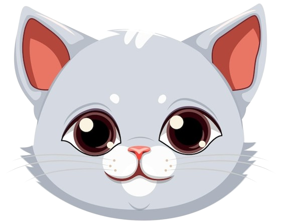

Котики теж заслуговують на свій власний дім й любов
цікаві факти про котиків
Коти можуть здійснювати стрибки в 7 разів довжини свого тіла
Коти мають дуже гнучку хребет
Коти дуже чутливі до запахів
Коти можуть видавати понад 100 різних звуків
Коти сплять більше ніж люди.
Коти мають гострі кігті, які допомагають їм ловити здобич та захищатися від ворогів. Але ці кігті можуть також бути шкідливими для меблів, якщо кіт буде їх точити.
Коти здатні побачити в темряві. Вони мають великі зіниці, які допомагають їм збирати найменші кількості світла, щоби бачити в темряві.
Кішки почали нявкати лише для спілкування з людьми
Кішки не відчувають солодкого
Стародавні єгиптяни також тримали котів як домашніх тварин
Коти старіють набагато швидше за людей
Коти люблять грати
Кішки є одними з найпопулярніших домашніх тварин у світі
Коти дуже підступні